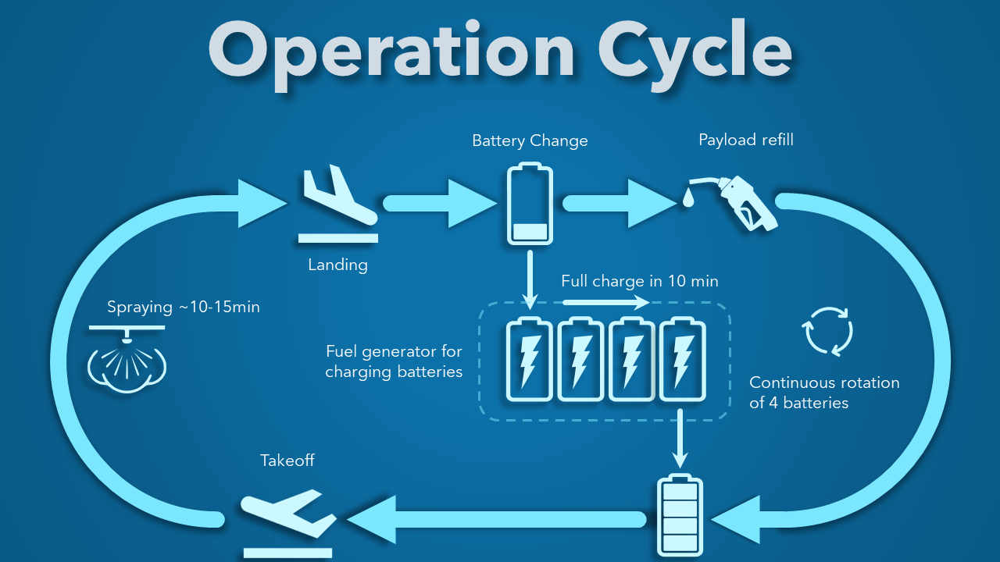

Agriculture — Méthodologie Terrain
Cycle Opérationnel DJI Agras
Traitement haute performance sans interruption de chantier. Grâce à la rotation stratégique de 4 batteries alimentées par un groupe électrogène inverter à recharge 10 minutes, vos drones enchaînent les parcelles en continu.

Architecture du flux de travail
Schéma Global du Cycle Opérationnel
De la sortie de vol à la recharge stationnaire, visualisation du flux en boucle fermée pour un chantier zéro temps mort.

Infographie du cycle opérationnel disponible';">Diagramme officiel du cycle opérationnel Equip Drones — Rotation sur 4 batteries et station de charge inverter.
Déroulement Pas à Pas
Les 4 Phases de la Rotation Continue
Décollage & Pulvérisation (10–15 min)
L'aéronef DJI Agras exécute automatiquement son plan de vol guidé par RTK centimétrique. Il effectue une pulvérisation ou un épandage ultra-précis à une vitesse constante (jusqu'à 13.8 m/s). Dès que la cuve est vide ou la batterie basse, le drone retourne automatiquement au point de départ.
Atterrissage & Remplissage Express
L'opérateur accueille le drone sur la zone d'avitaillement sécurisée. La cuve (de 20 kg à 100 kg selon le modèle) est rapidement rechargée en mélange phytosanitaire ou en granulés via le système de remplissage rapide sans contact direct.
Changement de Batterie Rapide
La batterie déchargée est retirée en un clic et remplacée immédiatement par une batterie fraîchement rechargée. L'opération globale d'avitaillement (remplissage cuve + swap batterie) prend moins de 90 secondes.
Station de Charge Inverter (Rotation 4 Batteries)
La batterie retirée est placée sur le chargeur intelligent relié au groupe électrogène Inverter D12000iE / D14000iE. En seulement 9 à 10 minutes, la batterie retrouve 100% de sa charge. Avec 4 batteries dans le circuit (1 en vol, 3 en recharge), le cycle de rotation est parfaitement ininterrompu.
Gamme DJI Agras
Drones de la Gamme Agricole
Équipez votre exploitation d'un pack Agras complet
Recevez un conseil personnalisé sur le dimensionnement des batteries, des chargeurs et des générateurs adaptés à votre surface.